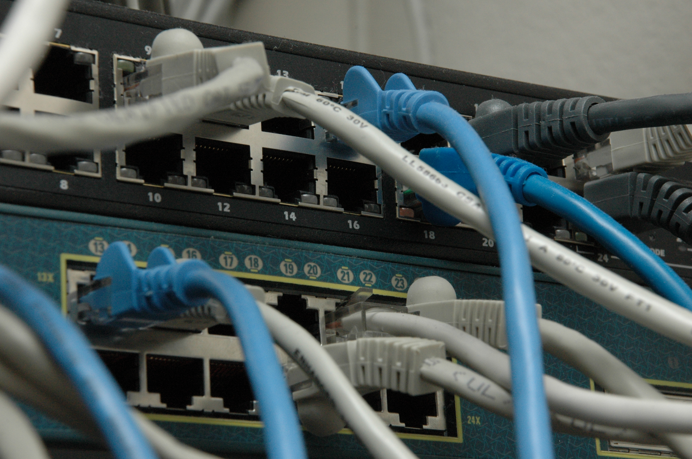
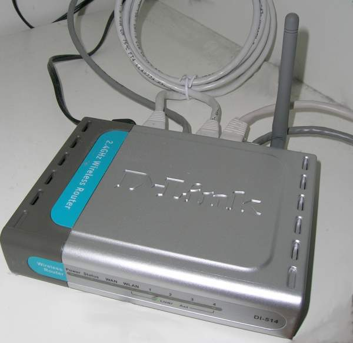

What Is a Computer Network?
A computer network is just two or more devices connected so they can exchange data — a laptop and a printer sharing a cable counts, and so does the entire internet. Every network, no matter its size, is built from the same handful of pieces: nodes (the devices — computers, phones, printers, servers), links (the physical or wireless connections between them), and a shared set of protocols — agreed-upon rules that let devices from different manufacturers understand each other.
Almost every acronym in networking describes either a device (router, switch), a protocol (TCP, HTTP), or an address (IP, MAC). Sorting a new term into one of those three buckets makes it much easier to remember what it's for.
Types of Networks by Size
| Type | Typical Range | Example |
|---|---|---|
| PAN — Personal Area Network | A few feet | Phone to wireless earbuds via Bluetooth |
| LAN — Local Area Network | One building/home | All the devices on your home Wi-Fi |
| MAN — Metropolitan Area Network | A city | A university connecting multiple campus buildings |
| WAN — Wide Area Network | Cities, countries, global | The internet itself; a company connecting offices in different states |
Client-Server vs. Peer-to-Peer
These are the two basic ways devices on a network relate to each other.
The OSI and TCP/IP Models
These two models describe networking in layers — each layer has one job and only talks to the layers directly above and below it. OSI is the 7-layer model everyone learns and uses to describe problems ("that's a layer 2 issue"); TCP/IP is the simpler 4-layer model the real internet is actually built on.
The Seven OSI Layers vs. the TCP/IP Model
Encapsulation: How Data Travels Down the Stack
As data moves down the stack to be sent, each layer wraps it in its own header — a process called encapsulation. The receiving device unwraps those headers in reverse order, called decapsulation.
IP Addressing
Every device on a network needs a unique address so traffic knows where to go — that's an IP address (Internet Protocol address).
IPv4 vs. IPv6
| IPv4 | IPv6 | |
|---|---|---|
| Format | 4 numbers 0–255, e.g. 192.168.1.1 | 8 groups of hex digits, e.g. 2001:0db8::1 |
| Address space | ~4.3 billion addresses | ~340 undecillion addresses |
| Why it exists | The original design (1981) | IPv4 ran out of addresses; IPv6 was built to never run out |
| Where you'll see it | Still the vast majority of everyday traffic | Growing steadily; most ISPs and phones now support it alongside IPv4 |
Subnet Masks and CIDR Notation
An IP address alone doesn't say which part identifies the network and which part identifies the specific device — a subnet mask does that. CIDR (Classless Inter-Domain Routing) notation writes the mask as a slash and a number instead of a full second address.
/24 = 255.255.255.0 — the first 24 bits are the network, the last 8
bits are host addresses: 28 = 256 possible addresses, minus 2 reserved
(network address + broadcast address) = 254 usable host addresses.
Public vs. Private IP Addresses
| Range | CIDR | Use |
|---|---|---|
| 10.0.0.0 – 10.255.255.255 | 10.0.0.0/8 | Private — large organizations |
| 172.16.0.0 – 172.31.255.255 | 172.16.0.0/12 | Private — medium networks |
| 192.168.0.0 – 192.168.255.255 | 192.168.0.0/16 | Private — most home routers default here |
| 127.0.0.1 | — | Loopback — "this device," used for local testing |
| Everything else | — | Public — globally unique, routable on the open internet |
Private addresses aren't unique across the internet — your home network's 192.168.1.5
is reused in millions of other homes. Your router's NAT (Network Address
Translation) is what lets all those private devices share one public IP without conflicting.
Core Networking Hardware
Four devices show up in almost every network diagram. Knowing what each one actually does — and doesn't do — clears up most beginner confusion.
Routers, Switches, and Hubs — What Each One Actually Does
| Device | OSI Layer | What it does |
|---|---|---|
| Hub | 1 (Physical) | Repeats every incoming signal out every port — no intelligence, mostly obsolete |
| Switch | 2 (Data Link) | Learns which MAC address is on which port; sends traffic only where it needs to go |
| Router | 3 (Network) | Connects separate networks together and directs traffic between them using IP addresses |
| Access Point | 1–2 | Extends a wired network's reach over Wi-Fi |

A cheap trick to keep switch vs. router straight: a switch connects devices within one network; a router connects different networks together (like your home network to your ISP's network).
Modems and Access Points
A modem (modulator-demodulator) converts the signal from your ISP — cable, fiber, or DSL — into a format your router can use, and vice versa. Most home "routers" today are actually a modem, router, switch, and wireless access point combined into a single box.

DNS — Turning Names into Addresses
Computers route traffic using IP addresses, but humans remember names. The Domain
Name System (DNS) is the internet's phone book — it translates a name like
coolsite.com into the IP address a browser actually needs to connect.
How a DNS Lookup Actually Works
Common DNS record types
| Record | Purpose |
|---|---|
| A | Maps a name to an IPv4 address |
| AAAA | Maps a name to an IPv6 address |
| CNAME | Aliases one name to another name |
| MX | Points a domain to its mail server |
| TXT | Free-form text, often used for domain verification/security policies |
Core Protocols You'll Run Into
A protocol is just an agreed-upon set of rules for how two devices communicate. A handful of protocols do almost all of the work on a typical network.
TCP vs. UDP
Common Ports Worth Memorizing
| Port | Protocol | Used for |
|---|---|---|
| 20 / 21 | FTP | File transfer |
| 22 | SSH | Secure remote login |
| 25 / 587 | SMTP | Sending email |
| 53 | DNS | Name resolution |
| 67 / 68 | DHCP | Automatic IP address assignment |
| 80 | HTTP | Unencrypted web traffic |
| 110 / 143 | POP3 / IMAP | Retrieving email |
| 443 | HTTPS | Encrypted web traffic |
| 3389 | RDP | Remote desktop |
HTTP, HTTPS, and the Web
HTTP (HyperText Transfer Protocol) is the protocol a browser uses to request and receive web pages. HTTPS is the same thing wrapped in TLS (Transport Layer Security) encryption, so a network in between can't read or tamper with the traffic — it's why browsers flag plain HTTP sites as "Not Secure."
DHCP (Dynamic Host Configuration Protocol) is why you almost never type in an IP address by hand — it's the protocol that automatically hands your device an address, subnet mask, gateway, and DNS server the moment it joins a network.
Wireless Networking Basics
Wi-Fi is just a wireless implementation of the same Ethernet ideas — it's governed by the IEEE 802.11 family of standards, each generation faster and more efficient than the last.
Wi-Fi Standards at a Glance
| Marketing name | Standard | Band | Rough max speed |
|---|---|---|---|
| Wi-Fi 4 | 802.11n | 2.4 / 5 GHz | ~600 Mbps |
| Wi-Fi 5 | 802.11ac | 5 GHz | ~3.5 Gbps |
| Wi-Fi 6 | 802.11ax | 2.4 / 5 GHz | ~9.6 Gbps |
| Wi-Fi 6E | 802.11ax | adds 6 GHz | ~9.6 Gbps, less congestion |
| Wi-Fi 7 | 802.11be | 2.4 / 5 / 6 GHz | ~46 Gbps (theoretical) |
SSIDs, Wi-Fi Security, and Common Pitfalls
An SSID (Service Set Identifier) is just the network's name — what shows up in the list of available Wi-Fi networks. The encryption protecting that network matters far more than the name.
Always confirm a router is running WPA2 or, ideally, WPA3 encryption. The older WEP and WPA standards can be broken in minutes with freely available tools and should never be used.
Network Security Fundamentals
Security isn't a separate topic bolted onto networking — it's built into how traffic is allowed to move at every layer already covered above.
Firewalls and the Network Perimeter
VPNs in Plain Terms
A VPN (Virtual Private Network) creates an encrypted tunnel between your device and a VPN server, so traffic in between is unreadable to anyone on the network path — useful on untrusted Wi-Fi, and for making it look like your traffic originates somewhere else.
Common Threats to Know
| Threat | What it is |
|---|---|
| Phishing | Fake messages tricking someone into revealing credentials or clicking a malicious link |
| Man-in-the-middle | An attacker secretly intercepts traffic between two parties, often on unsecured Wi-Fi |
| DDoS | Flooding a target with traffic from many sources to knock it offline |
| Malware | Malicious software — viruses, ransomware, spyware — that spreads or operates over the network |
| Packet sniffing | Passively capturing unencrypted traffic on a network to read its contents |
"It's on my private network so it's safe" is a myth once a device is exposed via port forwarding, UPnP, or a compromised device already inside the network — internal trust is not the same thing as internal security.
Glossary of Networking Terms & Acronyms
The core vocabulary from this guide, in one alphabetical place for quick lookup.
| Term | Definition |
|---|---|
| Bandwidth | The maximum amount of data a connection can carry per second |
| CIDR | Classless Inter-Domain Routing — the /24-style notation for expressing a subnet mask |
| DHCP | Dynamic Host Configuration Protocol — automatically assigns IP addresses and network settings to devices |
| DNS | Domain Name System — translates domain names into IP addresses |
| Encapsulation | Wrapping data in a header at each layer of the network stack as it's sent |
| Ethernet | The dominant wired LAN standard defining cabling, connectors, and frame format |
| Firewall | A device or software that inspects traffic and blocks what isn't explicitly allowed |
| Gateway | The device (usually a router) a network uses to reach devices outside itself |
| HTTP / HTTPS | HyperText Transfer Protocol (Secure) — the protocol browsers use to load web pages |
| IP Address | A unique numeric address identifying a device on a network |
| ISP | Internet Service Provider — the company that connects your network to the internet |
| LAN | Local Area Network — a network confined to one site, like a home or office |
| Latency | The delay between sending data and it arriving, usually measured in milliseconds |
| MAC Address | A hardware address burned into a network interface, unique to that physical device |
| NAT | Network Address Translation — lets many private devices share one public IP address |
| Node | Any device connected to a network |
| OSI Model | The 7-layer reference model used to describe how network communication is structured |
| Packet | A formatted unit of data with header information, sent across a network |
| Port | A number identifying which application/service on a device traffic is meant for |
| Protocol | An agreed-upon set of rules for how devices communicate |
| Router | A device that connects separate networks and directs traffic between them |
| SSID | Service Set Identifier — the broadcast name of a Wi-Fi network |
| Subnet | A logically segmented, smaller section of a larger network |
| Subnet Mask | Defines which part of an IP address is the network and which part is the host |
| Switch | A device connecting multiple devices within one network, forwarding traffic by MAC address |
| TCP | Transmission Control Protocol — reliable, connection-oriented data delivery |
| TLS | Transport Layer Security — the encryption underlying HTTPS |
| UDP | User Datagram Protocol — fast, connectionless data delivery with no delivery guarantee |
| VPN | Virtual Private Network — an encrypted tunnel for network traffic |
| WAN | Wide Area Network — a network spanning a large geographic area, e.g. the internet |
| Wi-Fi | The common name for wireless networking based on the IEEE 802.11 standards |
| WPA2 / WPA3 | The current, secure Wi-Fi encryption standards (WEP and WPA are outdated and insecure) |